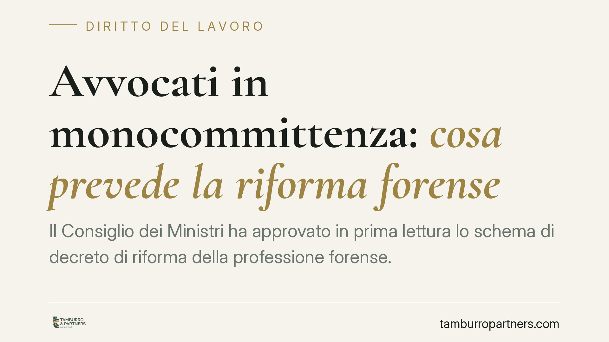

Avvocati in monocommittenza: cosa prevede la riforma forense
Il Consiglio dei Ministri ha approvato in prima lettura lo schema di decreto di riforma della professione forense. Tra le novità, una disciplina per gli avvocati che lavorano in via continuativa per un solo studio: contratto scritto, compenso congruo e alcune tutele per malattia e genitorialità. Restano però aperti nodi sul reddito nei periodi di sospensione e sulla previdenza.

Il fatto
Lo schema di decreto legislativo di riforma della professione forense, approvato in prima lettura dal Consiglio dei Ministri su impulso del Ministero della Giustizia, interviene su una figura finora priva di regole proprie: l'avvocato che collabora in modo continuativo e prevalente con un unico studio (cosiddetta monocommittenza).
Si tratta di una fascia ampia della professione: colleghi formalmente autonomi, titolari di partita IVA, ma di fatto legati a un solo soggetto che costituisce la quasi totalità del loro fatturato. Il testo prova a dare a questa situazione una cornice contrattuale minima.
Va premesso un avvertimento di metodo: parliamo di uno schema in prima lettura. I contenuti di dettaglio (durata delle tutele, perimetro delle garanzie) possono cambiare nel passaggio parlamentare e nella redazione del testo definitivo. I dati che seguono sono quindi da verificare sul testo finale.
Inquadramento normativo
La professione forense è regolata dalla legge 31 dicembre 2012, n. 247. L'art. 18 di quella legge disciplina le incompatibilità con l'esercizio della professione: non pone un divieto assoluto di qualsiasi rapporto di lavoro, ma individua le attività inconciliabili con lo status di avvocato, con alcune eccezioni (ad esempio il lavoro subordinato a tempo parziale entro certi limiti). La collaborazione continuativa tra professionisti si muove quindi in uno spazio diverso dal lavoro dipendente.
Il nuovo schema introduce, secondo le prime informazioni, l'obbligo di contratto scritto, un compenso congruo e una tutela della continuità del rapporto in caso di malattia e genitorialità, indicata in circa 180 giorni (dato da verificare sul testo definitivo e riferito all'articolo dello schema che introduce la misura, non ancora pubblicato in forma consolidata).
Un chiarimento necessario sull'analogia con l'equo compenso. La disciplina vigente in materia è la legge 21 aprile 2023, n. 49, che però regola il compenso del professionista nei confronti di clienti "forti" (banche, assicurazioni, grandi imprese, pubblica amministrazione). La sua *ratio* — evitare che la parte contrattualmente debole subisca compensi irrisori — è richiamabile come principio, ma non si applica direttamente al rapporto tra collaboratore e studio dominante, che è una relazione diversa. Il parallelo è quindi di principio, non di norma.
Implicazioni pratiche
Il punto centrale, e insieme il limite, è questo: la riforma tende a stabilizzare il rapporto, non a garantire il reddito. Le tutele previste (se confermate) proteggono la continuità della collaborazione durante malattia o genitorialità, impedendone l'interruzione per quel periodo. Non introducono però un'indennità che copra il mancato guadagno nei giorni di sospensione. Chi non lavora, in sostanza, può conservare il rapporto ma non percepire compensi.
Resta inoltre il nodo previdenziale. Il collaboratore continua a versare alla Cassa forense secondo le regole dei professionisti autonomi; l'eventuale periodo di sospensione incide sui contributi e, di riflesso, sulla posizione pensionistica. Su questo lo schema non sembra introdurre meccanismi compensativi chiari.
C'è infine un rischio che la nuova disciplina non elimina: la riqualificazione del rapporto come subordinato. Se lo studio dominante esercita un potere direttivo pieno — orari imposti, controllo costante, inserimento stabile nell'organizzazione altrui — un giudice del lavoro può ritenere esistente un rapporto di lavoro subordinato mascherato, con tutte le conseguenze economiche e contributive del caso. Il contratto scritto formalmente "autonomo" non mette al riparo da questo accertamento, che guarda alla sostanza del rapporto.
Cosa fare in concreto
Per il collaboratore in monocommittenza:
- Pretendi un contratto scritto che indichi con precisione oggetto, compenso, tempi di pagamento e durata, e conservane copia firmata.
- Documenta la tua autonomia operativa: gestione dei tempi, della clientela propria eventuale, dell'organizzazione del lavoro. Serve a difendere la natura autonoma del rapporto.
- Costruisci per quanto possibile una riserva economica che copra i periodi di sospensione non retribuiti.
Per lo studio committente:
- Rivedi i contratti di collaborazione in essere alla luce dei requisiti formali richiesti dallo schema.
- Evita forme di eterodirezione (orari rigidi, controllo gerarchico, obbligo di presenza continuativa) che espongono al rischio di riqualificazione in subordinazione.
- Attendi il testo definitivo prima di adeguare clausole sulle tutele di malattia e genitorialità: i dati di dettaglio possono mutare.
Disclaimer
Contributo informativo a cura di Tamburro & Partners - Avv. Giuseppe Tamburro. Non costituisce parere legale.
Ogni storia di lavoro ha i suoi tempi.
Se gestisci HR e vuoi un confronto su contenzioso, ispezioni o licenziamenti, scrivi allo studio. Ti rispondiamo entro un giorno lavorativo.